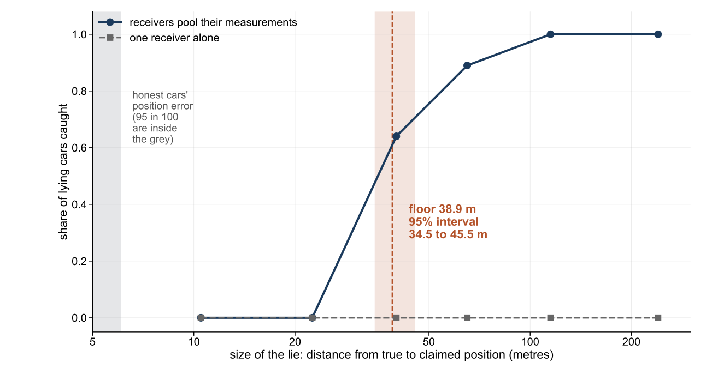
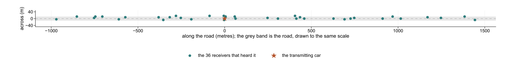
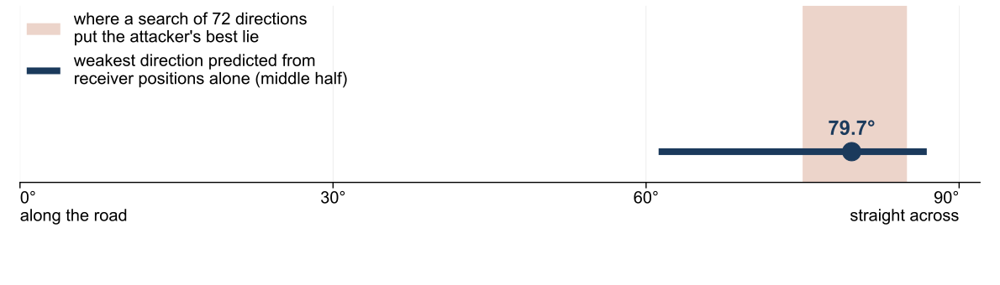

Supervisor A/Prof Ke (Desmond) Wang. Research mentor Mr Kanwardeep Singh Gahlot. Engineering Capstone Project, School of Engineering, RMIT University, Melbourne.
Connected cars broadcast their position several times a second over a direct radio link, and the cars around them act on it. Every message is signed, so a car with valid credentials can still sign a false position, and no cryptographic check will reject it.
A receiver does have one independent clue: how strongly the signal arrived, which falls with distance from where the sender really is.
We simulated a highway in the ns-3 network simulator [2, 3] with five traffic scenarios, ten kinds of attack, and honest cars that carry realistic position error. The result is a public dataset of 7,916,708 labelled one-second windows [1]. Part A of this project reported a perfect score on a different dataset; an audit found 96.39 percent of its test rows were also in training, so the data was rebuilt and checked for leakage before any model was trained.

One receiver sees nothing. A car that shifts every claim by the same amount keeps its speed and heading consistent. On a detection score from 0 (none caught) to 1 (all caught), content checks score 0.000 on it and four different learning methods reach at most 0.158.
Pooling has to happen before the decision. When receivers vote with their verdicts instead of sharing measurements, detection of the same lies stays at exactly 0.000.
The honest cars matter. Here they carry realistic position error. Without it every lie is separable in principle and the detection task becomes far easier than on a real road.


| Size of lie | Free to leave the road | Map check at 18 m |
|---|---|---|
| 25 m | 0.002 | 0.006 |
| 50 m | 0.013 | 0.230 |
| 100 m | 0.056 | 0.854 |
| 200 m | 0.241 | 0.943 |
The two checks cover each other. A sideways lie leaves the road and the map rejects it; a lie along the road is the one the radio sees best.
All measurements are simulated, on one straight highway. Many simulated attackers claimed positions more than 18 m off the road (28.61 percent of the constant shift windows), which a map check rejects with no radio evidence. Next: score pooled detection on on-road claims only, to separate the radio's share of the floor from the map's.
Try it yourself: you are the attacker. Move a claimed position and watch the receivers decide.